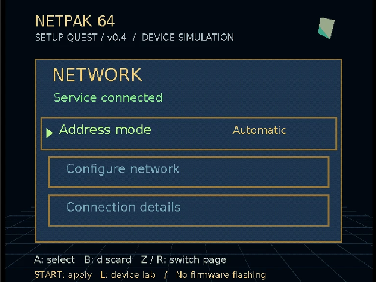
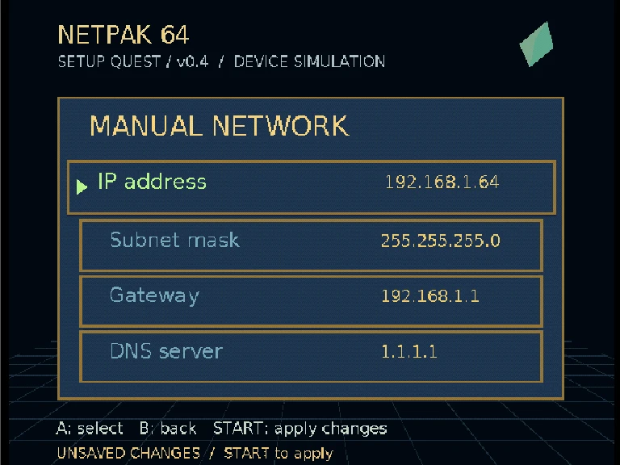
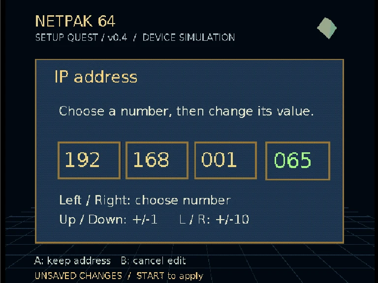
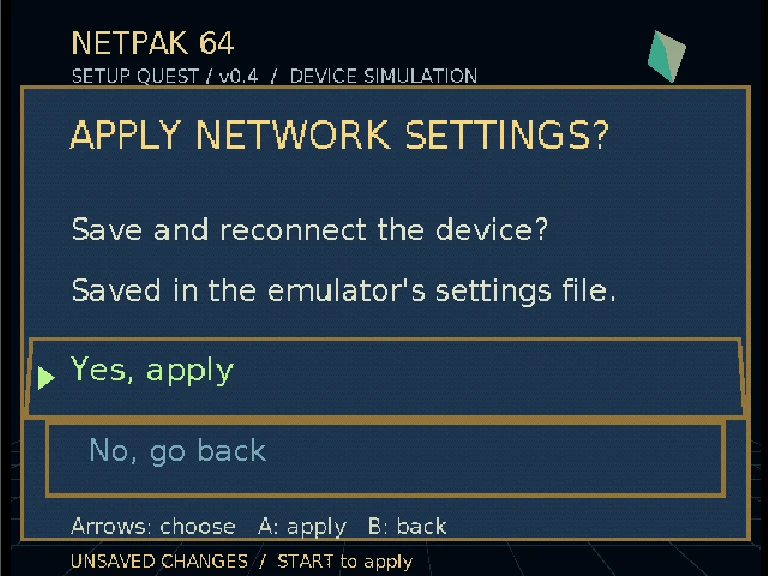
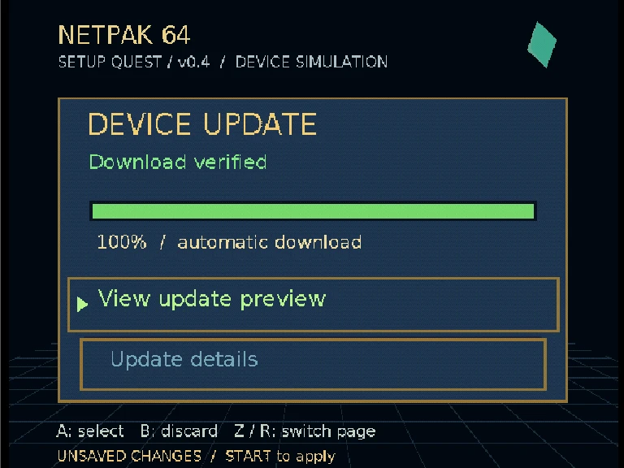
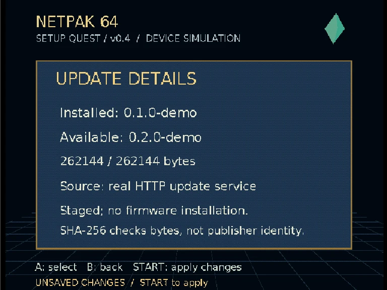
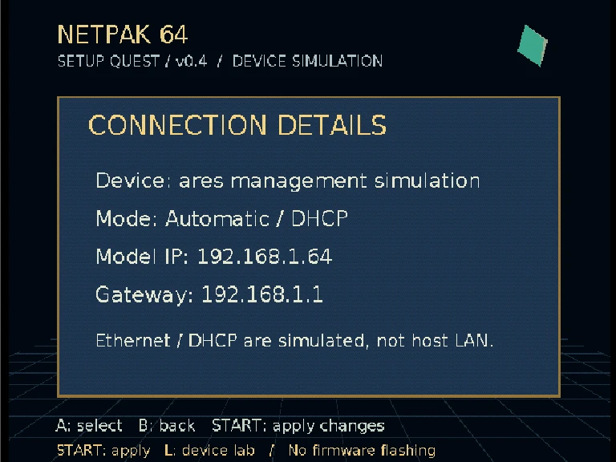
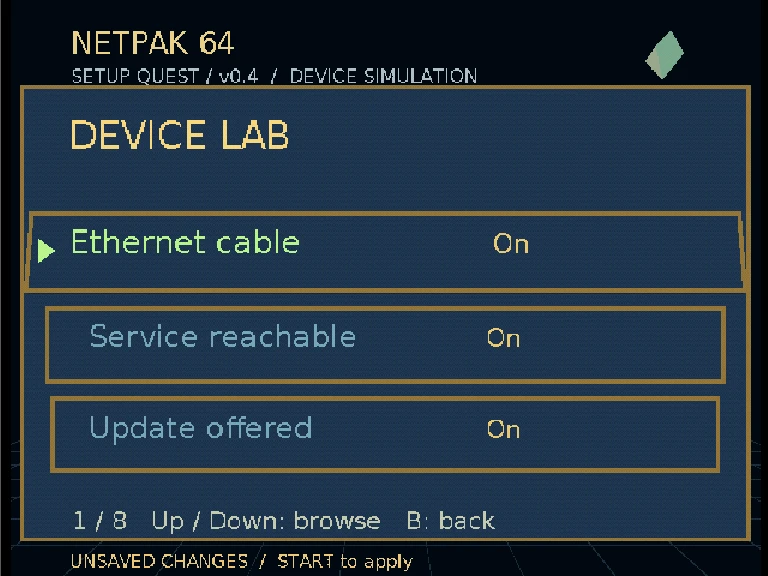
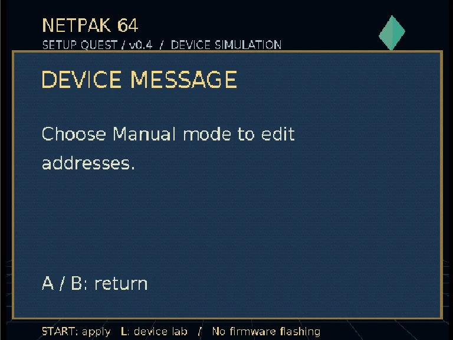
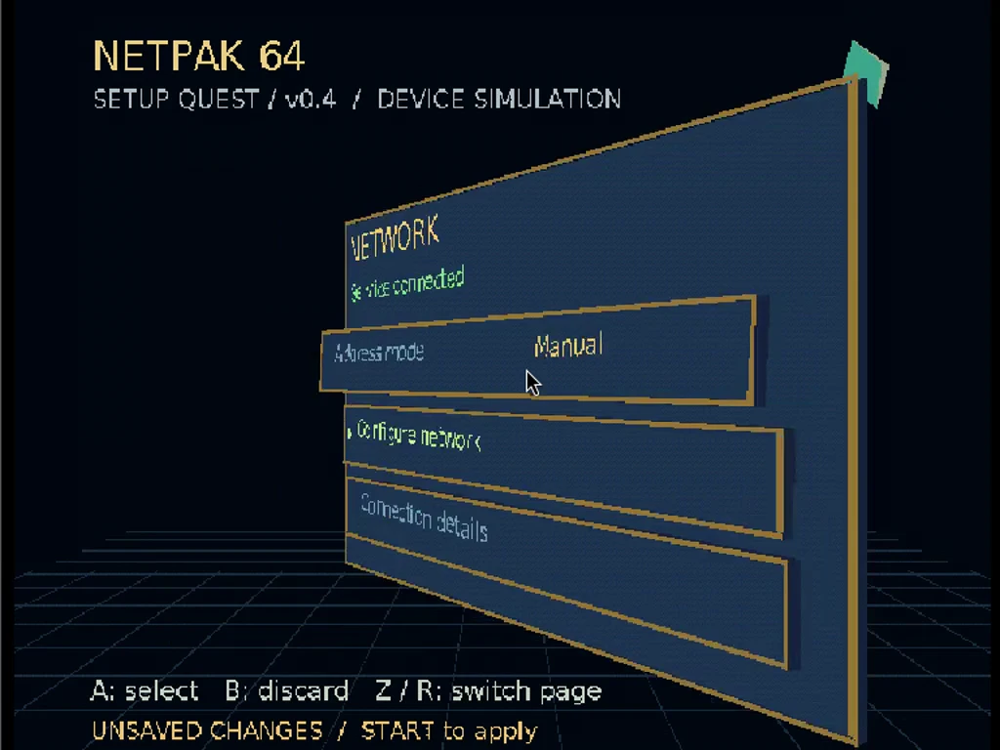

Perspective, not a wipe
libdragon OpenGL submits real N64 RSP/RDP geometry. Cards lift 28 world units and tilt when selected; labels share their transforms. Z/R rotates the whole page around Y.
Cartridge interposer project / development log / 16 October 2026
NetPak Setup is a standalone N64 homebrew ROM for network settings and update management. v0.4 pairs larger, focused screens with genuine RSP/RDP-rendered 3D menus—and reads real HTTP download progress through the experimental ares NetPak management device.
Interactive ROM / recorded in ares
48 seconds of actual emulator interaction: network details, manual addressing, an octet edit, Apply, update status, preview and Device Lab. Filename and captions pin this recording to v0.4.
Setup ROM v0.4 · 1024 × 768 capture · 30fps video · netpak-setup-v0.4-3d-walkthrough.mp4
libdragon OpenGL submits real N64 RSP/RDP geometry. Cards lift 28 world units and tilt when selected; labels share their transforms. Z/R rotates the whole page around Y.
24px proportional body font replaces the previous 8px body text at 640 × 480. Address digits are larger still. Detailed state moves onto dedicated screens.
Fixed camera, settling selection animation, a low-poly jewel and gold-trimmed panels. An original OoT-inspired interaction pattern—not Nintendo’s menu engine or extracted assets.
Every capture / Setup ROM v0.4
Click a capture for full resolution. Draft network settings survive page changes. B backs out of details or fields; B on a primary page discards unsaved changes.

Three choices: address mode, Configure Network, Connection Details. A toggles Automatic / Manual; Up / Down moves the selection.

Choose Manual on the main page, then Configure Network. Select IP, mask, gateway or DNS; A opens its dedicated editor.

Left / Right chooses an octet; Up / Down changes it by 1, L / R by 10. A keeps the draft; B restores that field’s pre-edit value.

START opens Apply. Arrows choose Yes / No; A confirms. B cancels the dialog without losing edits. Validation failures keep the previous settings.

Compatible updates download automatically. A retries an error or opens the staged-image preview. No firmware installation is performed.

Available version and actual byte counts are separate from the main page. This run staged 262,144 / 262,144 bytes through the real HTTP worker.

Device backend and saved addressing information. Ethernet and DHCP are modeled; these settings do not reconfigure the host’s network interface.

L opens developer controls, three per page. Up / Down browses; A toggles / runs; B closes. Real HTTP mode does not let fixture toggles fake update outcomes.

Messages explain blocked actions and failed validation without squeezing extra diagnostic text into the main menu.

Z / R turns the primary pages over 520ms. This frame comes from the v0.4 emulator video, not a conceptual UI mockup.
Verified 16 October 2026 / local development session
Yes. A fresh ares session fetched the catalog, downloaded a 256KiB demo artifact, verified its digest and displayed “Download verified — 100%.” This is a recorded verification snapshot, not a public uptime monitor.
0.2.0-demo.Update HTTP is not tunneled through the gameplay UDP relay. The management prototype uses a host-worker mailbox, not the earlier Verilator RTL packet frontend. The current update service listens only on the development host’s loopback interface; this public page is not an update endpoint.
Both service processes are managed by user systemd units. The ares check was left running after verification; this static page does not promise continuous availability.
Media build: Setup ROM v0.4; local prototype source commit 5cd0df7. The prototype source checkout is not yet a published repository. Versioned media manifest. Captured with the isolated ares management/HTTP integration.
ROM SHA-256: 5af8e1864251b2d88d5c21cd9e2a3a46ef12903a32e8b30baba36ce10b5f6a7e
Demo artifact SHA-256: 825ac7e39ee23edb998005e281c948c3269f13d47bea7226cf39073586966320
The server marks the artifact kind=simulation, installable=false. SHA-256 validates bytes against this catalog; it does not authenticate a firmware publisher. No commercial game ROM is distributed here.
USB-free hardware goal
The selected physical concept is top cartridge → active interposer → console cartridge slot. The setup ROM and device model let us exercise the configuration/update workflow before committing that behavior to hardware.
Physical console + SummerCart64 ↔ PC bridge ↔ emulator gameplay was an earlier reference path. This new goal removes the USB/PC bridge; the simulated setup workflow alone does not prove the untethered board works.